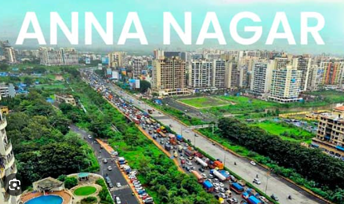

Anna
Nagar🌿

🌇 Anna Nagar – The Heart of Chennai 💖
A vibrant and modern neighborhood known for its lively streets, shopping malls, cozy cafés, and lush parks. 🏙️✨
It’s a perfect mix of urban life and peaceful charm — where style, food, and culture come together beautifully. 🌿☕🛍️
🏠 Modern Lifestyle ✨
Anna Nagar is one of Chennai’s most well-planned localities, offering wide roads, neat layouts, and everything you need for a comfortable city life. 🛣️🏢
🛍️ Shopping & Entertainment 🎬
From trendy malls like VR Chennai 🏬 to local boutiques and theaters, Anna Nagar is a paradise for shoppers and movie lovers alike! 💃🎥
☕ Food & Hangouts 🍕
Whether it’s a cozy café, a fancy restaurant, or a street food corner — Anna Nagar never disappoints foodies. 🍔☕🍰
🌳 Green & Peaceful 🍃
Despite being in the middle of the city, it’s filled with parks and tree-lined avenues, making it calm and refreshing to walk around. 🌿🌼
🚇 Well Connected 🚘
With metro stations 🚇, bus routes 🚌, and easy access to major roads, traveling to and from Anna Nagar is super convenient! 🗺️✨